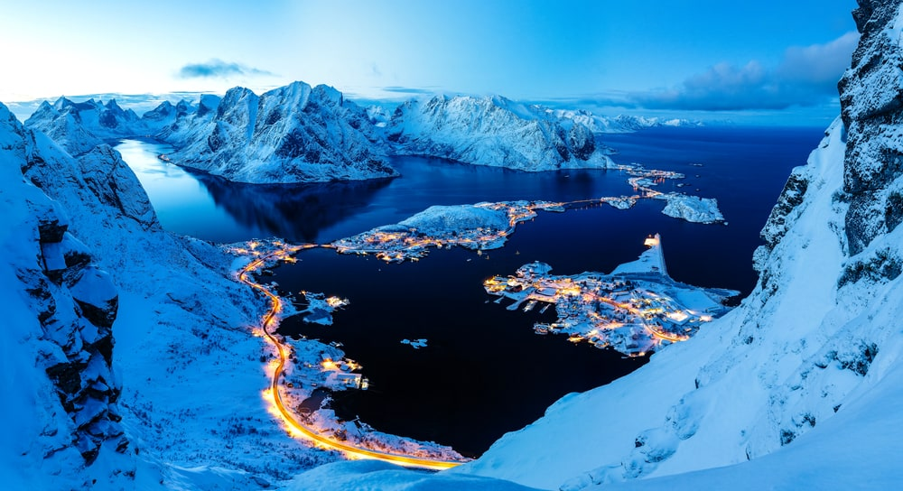
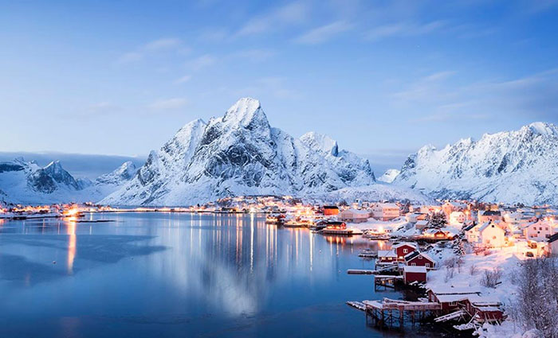
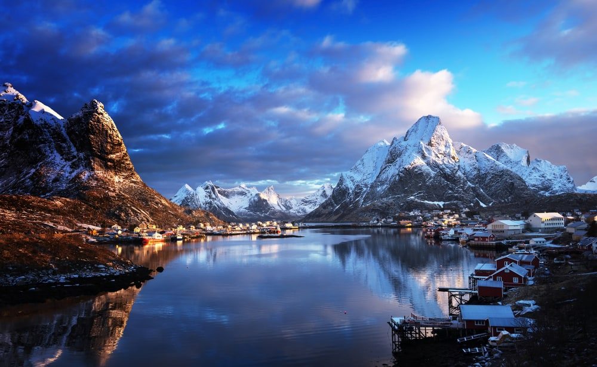
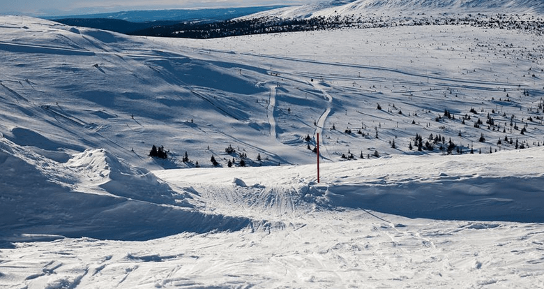
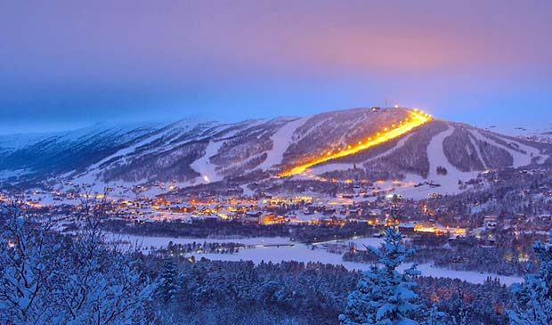

What is alpine skiing for Norway? These are numerous slopes covered with excellent white snow, which is guaranteed to lie on the slopes from November to May. There are a huge number of ski
trails equipped here and the accompanying
infrastructure is remarkably developed. The trails are designed for both novice skiers and professionals, with appropriate slopes and turns. In addition to downhill skiing, you can ride bobsleigh, snowboard and tubing in the ski resorts of
Norway.
It is believed that Norway became the founder of skiing — the first resorts for downhill skiing were opened here more than a century ago.



Trysil

Trysil is the largest ski center in Norway, located near the border with Sweden. Trysil is located on the slope of the Trysilfjellet Mountain, which
is a three-hour drive from Oslo. The climate of the resort is continental, the most stable in all of Scandinavia, and the ski season lasts the longest in Europe — from the end of October to May. Excellent coverage of most descents in any
weather is supported by snow cannons. There is a ski school for adults and children at the resort. There are 66 equipped slopes with a total length of 71 km: 21 green, 17 blue, 17 red, 11 black. Some trails have lighting for skiing in the dark.
For cross-country skiers, there are about 100 km of flat trails.
Hotels in Trysil:
Gailo(Yailo)

Connoisseurs of mountain landscapes and good ski resorts will certainly appreciate the beauty of the mountain town of Geilo in Norway, which is
located northwest of Oslo on the way to Bergen. This is the first ski resort in Scandinavia, the creation of which took place more than a century ago, and the first ski competitions in this area took place in 1935. The resort is located next to
the Hardanger Plateau National Park — international slalom and cross-country skiing competitions are regularly held here.In total, about 39 slopes have been prepared in Geilo, three tracks for snowboarding, three schools where skiers and
snowboarders are trained. In addition, the slopes are equipped with lifts, lighting and ski equipment rental points.Moreover. Geilo is a great place to relax in a ski resort with a family: here you can fully master the technique of skiing and
hone your existing skills, and a specialized ski school has been created for children. An additional advantage of a holiday in Geilo is the proximity to the city, where you can spend time in bars, restaurants or nightclubs.